Chapitre 8 Molécules
- Calculer la masse réelle d’une molécule à partir des masses atomiques des atomes qui la composent.
- Calculer le nombre de moles/molécules que contient une masse donnée d’un composé.
- Dessiner la formule développée d’une molécule avec ses covalences et électrovalences.
- Expliquer le concept de polarité et identifier une molécule polaire.
- Expliquer le concept de liaison intermoléculaire.
- Identifier les différents types de liaisons intermoléculaires.
De nombreuses substances existent sous la forme de deux ou plusieurs atomes reliés entre eux de manière si forte qu’ils se comportent comme une seule particule. Ces combinaisons de plusieurs atomes sont appelées molécules. De manière similaire à un atome, une molécule est la plus petite partie d’une substance qui possède les propriétés physiques et chimiques de cette substance. Cependant, une molécule est composée de plus d’un atome.
Molécule
Une molécule est un groupe d’au moins deux atomes liés par une/des liaison(s) chimique(s).
8.1 La formule brute
Les molécules sont composées d’atomes. On les représente par une formule, en indiquant les symboles des atomes qui les composent et leur nombre. Cette formule est appelée formule brute. La formule brute donne le nombre d’atomes des différents éléments qui forment un composé, exprimés avec les plus petits nombres entiers possibles.
- \(NaCl\) : 1 atome de sodium et 1 atome de chlore
- \(O_2\) : 2 atomes d’oxygène
- \(H_2O\) : 2 atomes d’hydrogène et 1 atome d’oxygène
Lorsqu’un atome n’est présent qu’une seule fois dans la molécule, on n’indique pas l’indice 1. La formule brute de l’eau s’écrira donc H2O et non H2O1, et on écrira CO2 et non C1O2.
Si l’on considère plusieurs molécules, on l’indique par un facteur placé devant la formule brute:
- 2 \(NaCl\) : 2 molécules de \(NaCl\)
- 3 \(O_2\) : 3 molécules de \(O_2\)
- 4 \(H_2O\) : 4 molécules de \(H_2O\)
La formule brute d’un composé est également utilisée comme abréviation du nom du composé.
8.2 La formule développée
Les formules brutes ne donnent aucune information sur la structure ou la géométrie du composé. Elle ne permet pas d’indiquer comment les atomes sont reliés entre eux par des liaisons chimiques ou comment ils sont disposés dans l’espace. Comprendre comment les atomes d’une molécule sont disposés et comment ils sont liés entre eux est très important pour expliquer les caractéristiques physiques et chimique d’un composé.
La formule développée identifie l’emplacement des atomes ainsi que leurs liaisons au sein d’une molécule. On utilise la représentation de Lewis pour dessiner les atomes des différents éléments qui sont reliés par des lignes qui représentent les liaisons chimiques.
Figure 8.1: La molécule de méthanol.
La première étape pour dessiner une molécule est de convertir sa formule brute en structure de Lewis.
8.2.1 Dessiner les liaisons ioniques des composés binaires
- On dessine la structure de Lewis des atomes en plaçant l’élément le plus électronégatif à droite.
- On dessine autant de cations et d’anions nécessaires à apparier tous les électrons célibataires de chaque élément.
- On transfère les électrons des cations aux anions.
- On dessine les paires nouvellement créées et on ajoute les charges négatives ou positives.
| \(NaCl\) | \(MgBr_2\) | \(AlF_3\) |
|---|---|---|
| 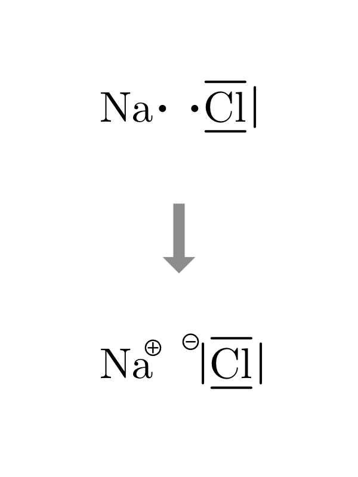 | 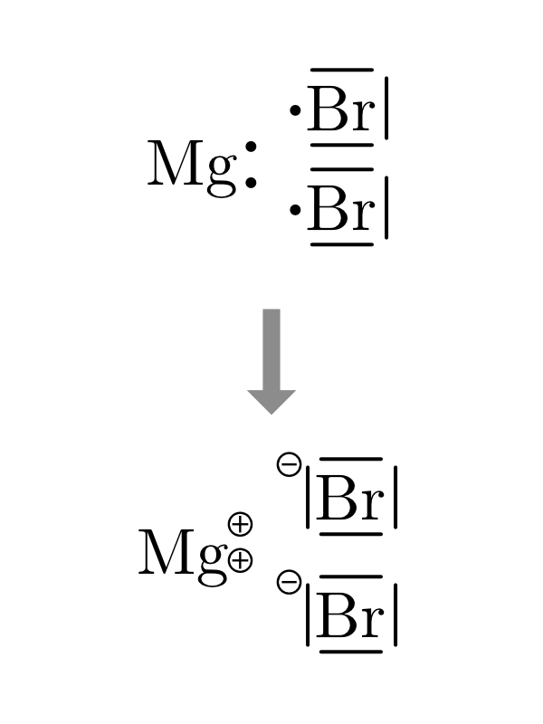 | 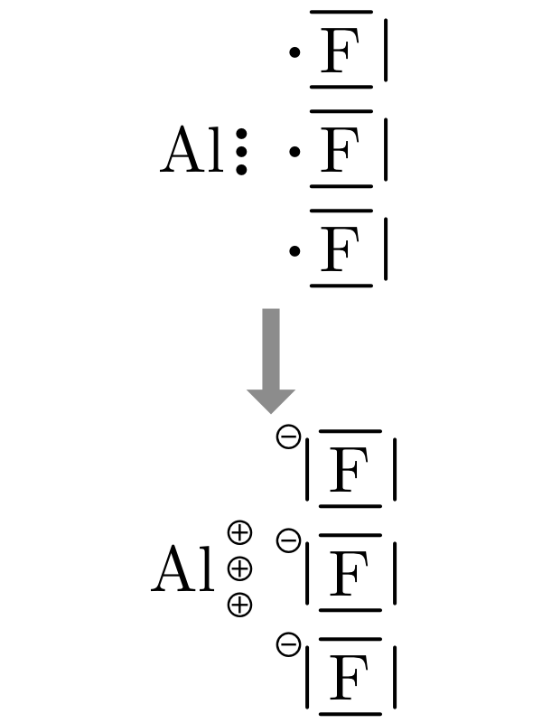 |
8.2.2 Dessiner les liaisons covalentes des composés binaires
- On dessine la structure de Lewis des atomes en plaçant l’élément le plus électronégatif à droite.
- On dessine autant d’atomes nécessaires à apparier tous les électrons célibataires de chaque élément.
- On dessine les liaisons nouvellement créées et on ajoute les charges partielles si il y lieu.
- Plusieurs liaisons covalentes doubles ou triples peuvent être nécessaires.
- On peut utiliser les paires libres pour former des liaisons par covalence de coordination.
- On dessine les liaisons nouvellement créées et on ajoute les charges partielles si il y lieu.
| \(H_2O\) | \(NH_3\) | \(CH_4\) |
|---|---|---|
| 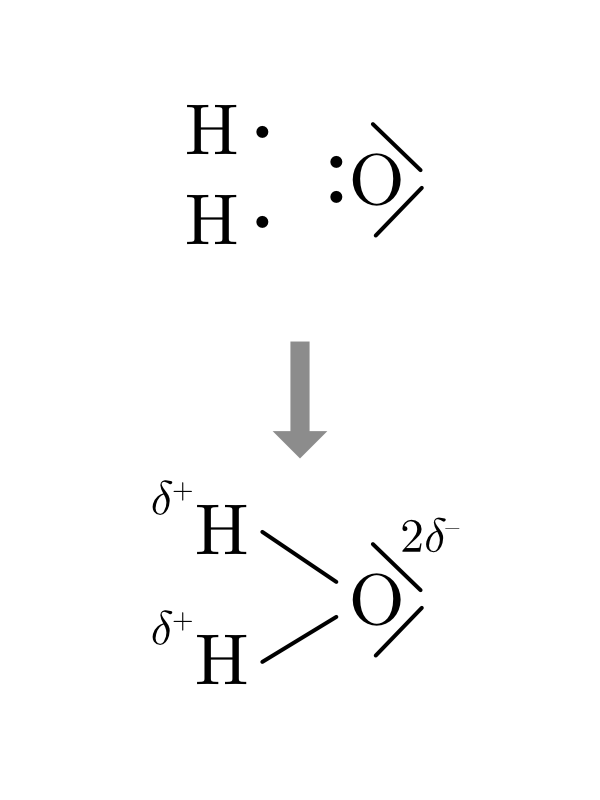 | 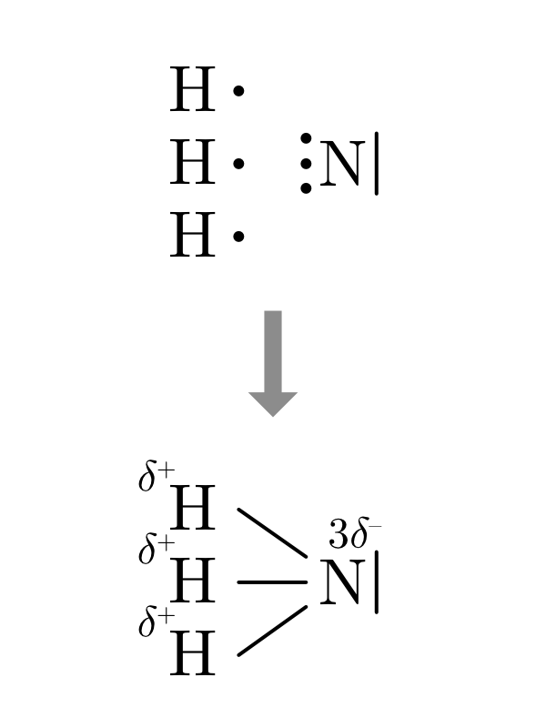 | 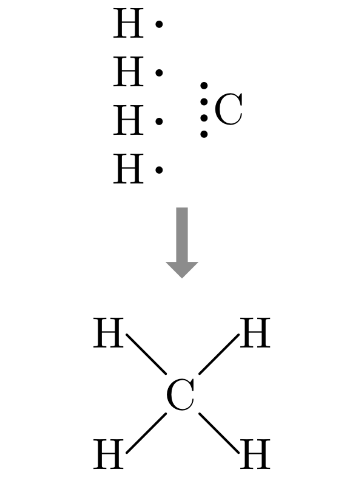 |
8.2.3 Dessiner les composés ternaires
- De gauche à droite, dessiner le modèle de Lewis de chacun des éléments présents dans la molécule.
- Dessiner d’abord les éléments de la colonne I, II ou III.
- Dessiner ensuite autant d’oxygène qu’il y a d’électrons libres dans la première colonne.
- Dessiner ensuite les éléments autre que l’oxygène.
- Dessiner ensuite les oxygènes restants.
- Dessiner les covalences ou électrovalences selon les différences d’électronégativité.
Dessinez la formule développée à l’aide du schéma fourni pour les composés \(KNO_2\) et \(CaCO_3\)
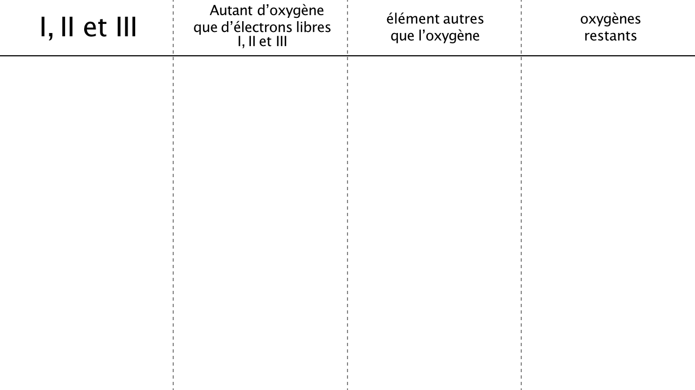
8.3 Les ions polyatomiques
Les ions \(Na^+\), \(Mg^{2+}\) ou \(Cl^–\) sont monoatomique, ce qui signifie qu’ils sont constitué d’un seul atome ionisé. Il existe des ions polyatomiques, tels que \(NH4^+\) (ion ammonium) ou \(SO4^{2–}\) (ion sulfate). Ils se composent d’atomes liés par des covalences mais ils portent une charge positive ou négative.
| ion hydroxyle | ion nitrite | ion carbonate | ion ammonium |
|---|---|---|---|
| \(OH^–\) | \(NO_2^–\) | \(CO_3^{2–}\) | \(NH_4^+\) |
| 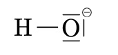 | 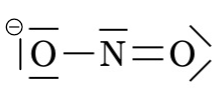 | 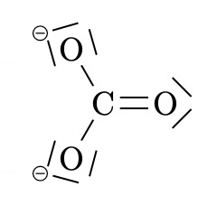 | 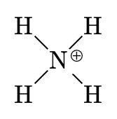 |
Quand un ion polyatomique est présent plusieurs fois dans une molécule, on l’indique dans la formule brute par des parenthèses et un indice comme dans les exemples : \(Ca(OH)_2\), \(Ba(NO_3)_2\), \(Ca(HCO_3)_2\).
Complétez le tableau en indiquant quel cation et quel anion forment les molécules ci-dessous ainsi que leur nombre:
| formule | cation | anion |
|---|---|---|
| \(NaNO_2\) | ||
| \(H_2SO_4\) | ||
| \(CaS_2O_3\) | ||
| \(Li_2CO_3\) | ||
| \(Mg_3(PO_4)_2\) |
\(NaNO_2\) / 1 \(Na^+\) / 1 \(NO_2^-\)
\(H_2SO_4\) / 2 \(H^+\) / \(SO_4^{2-}\)
\(CaS_2O_3\) / \(Ca^{2+}\) / \(S_2O_3^{2-}\)
\(Li_2CO_3\) / 2 \(Li^+\) / \(CO3^{2-}\)
\(Mg_3(PO_4)_2\) / 3 \(Mg^{2+}\) & 2 \(PO4^{3-}\)
8.3.1 Dessiner les composés binaires covalents avec un atome central
Cette méthode, appelée VSEPR, s’applique aux molécules ayant un atome central. Elle est basée sur le fait que les liaisons et les paires libres vont s’organiser autour d’un atome central de façon à minimiser leurs répulsions.
On commence par définir le nombre stérique, NS.
\[ \begin{split} NS = m + n \end{split} \qquad \begin{split} &\text{avec} \\ &\text{m: nombre d'atomes liés à l'atome central} \\ &\text{n: nombre de paires libres de l'atome central} \end{split} \]
Ensuite, à chaque valeur de NS correspond une géométrie de molécule.
| NS | nom | angles de liaisons | représentation | exemple |
|---|---|---|---|---|
| 2 | linéaire | 180° | 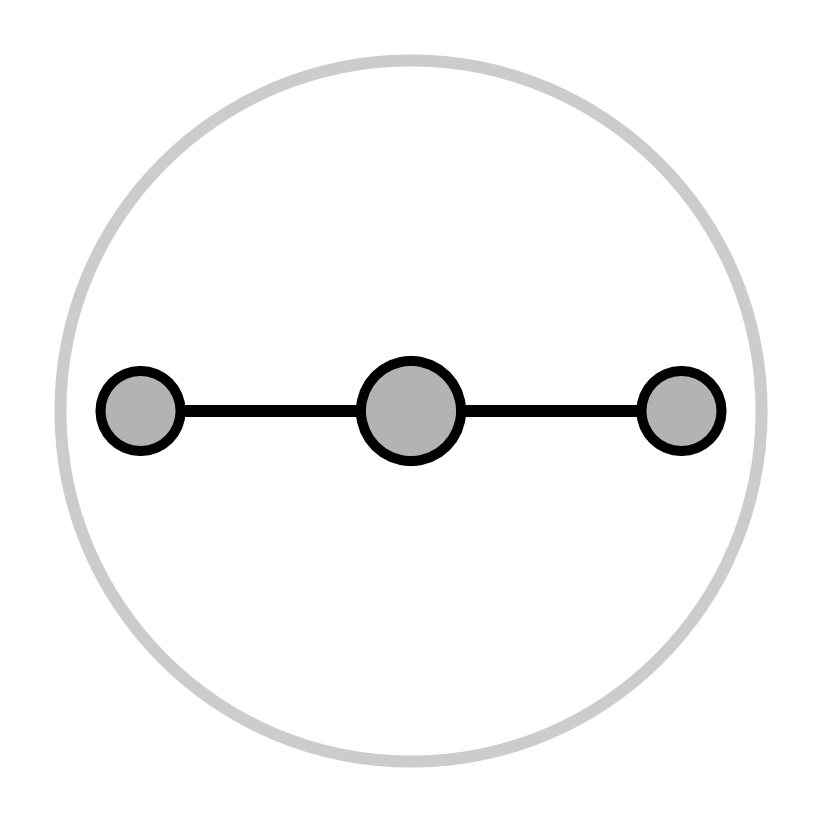 | 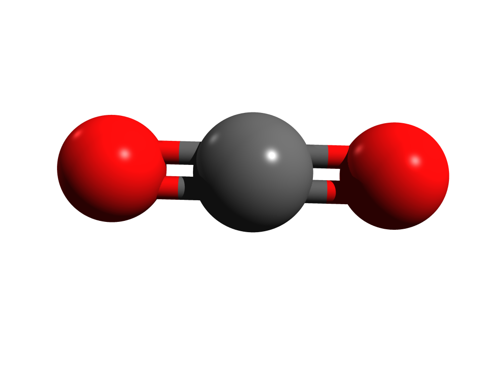 |
| 3 | trigonale plan | 120° | 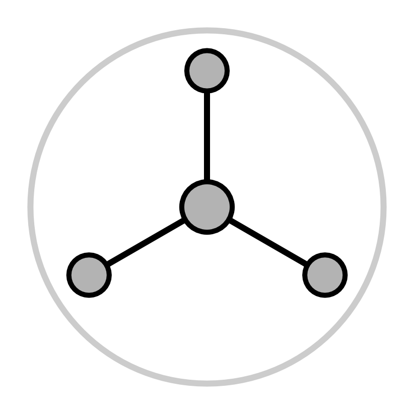 | 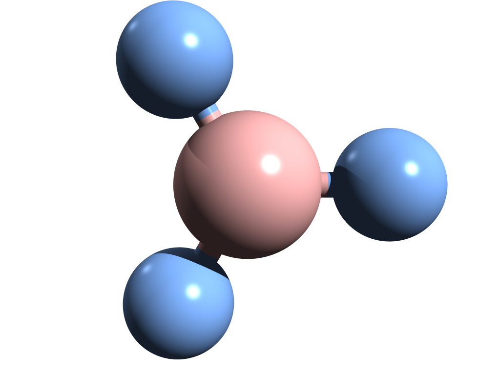 |
| 4 | tétraèdre | 109.5° | 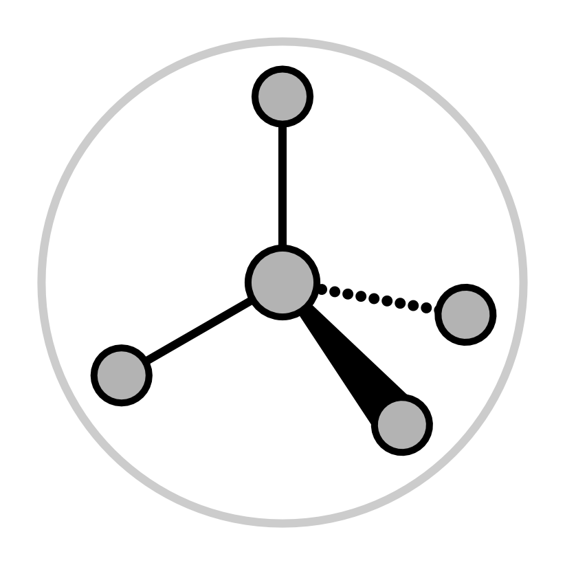 | 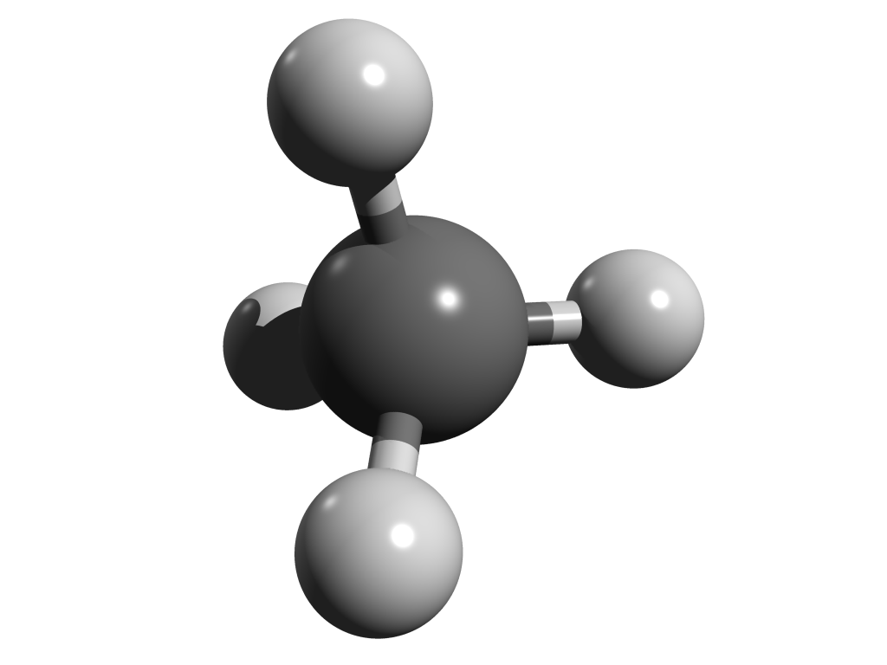 |
| 5 | bipyramide trigonale | 120° et 90° | 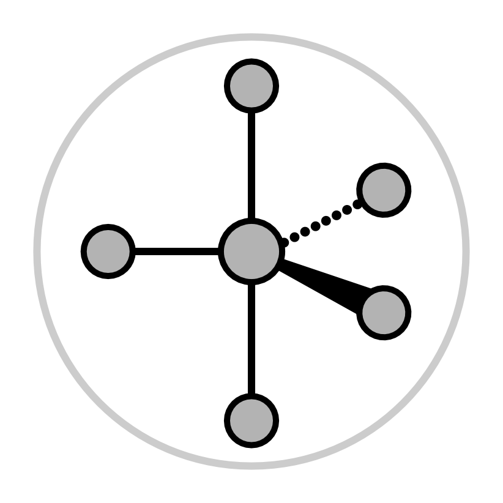 | 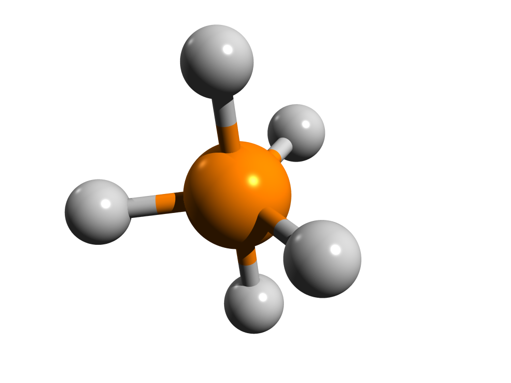 |
Il existe des géométries pour des valeurs de NS supérieures à 5, mais elles ne sont pas représentées dans ce tableau.
A l’aide de la méthode VSEPR, dessinez la formule développée des molécules proposées ci-dessous et indiquez les angles de liaison.
\(NH_3\)
\(SO_3\)
\(H_2O\)
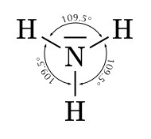
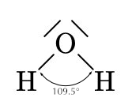
8.4 La masse molaire moléculaire
Masse molaire moléculaire
La masse molaire d’un composé est la masse en grammes d’une mole de molécules de ce composé.
Une molécule de \(CH_4\) contient …
- 1 atome de carbone et
- 4 atomes d’hydrogène.
Donc, une mole de molécules de \(CH_4\) contient …
- 1 mole d’atomes de carbone et
- 4 moles d’atomes d’hydrogène.
La masse d’une mole de méthane peut être trouvée en additionnant les masses molaires atomiques du carbone et de l’hydrogène présents dans la molécule:
\[ \begin{split} \text{Masse de 1 [mol] de carbone} &= 12.01 [g] \\[0.5em] \text{Masse de 4 [mol] d'hydrogène} &= 4.032 [g] \quad (4 \cdot 1.008 [g]) \\[1em] \text{Masse de 1 [mol] de $CH_4$} &= 16.04 [g] \end{split} \]
Calculez la masse molaire moléculaire des composés suivants.
| formule | masse molaire |
|---|---|
| \(SrCl_2\) | |
| \(KNO_3\) | |
| \(NH_4Cl\) | |
| \(Ca_3(PO_4)_2\) | |
| \(Mg(NO_2)_2\) | |
| \(CH_3COOH\) |
\(SrCl_2\) : 158.5 [g/mol]
\(KNO_3\) : 101 [g/mol]
\(NH_4Cl\) : 53.5 [g/mol]
\(Ca_3(PO_4)_2\) : 310 [g/mol]
\(Mg(NO_2)_2\) : 116 [g/mol]
\(CH_3COOH\) : 60 [g/mol]
8.5 La polarité
La différence d’électronégativité entre les éléments chimiques qui composent une molécule induit une répartition dans l’espace de charges négatives et positives créant ainsi un dipôle (ou un multipôle). C’est-à-dire, un couple de charges de signe opposé distantes d’une longueur non nulle. C’est l’équivalent d’un minuscule aimant. On représente un dipôle par une flèche avec une base en croix et dont la flèche pointe vers l’atome le plus électronégatif.
Un dipôle peut se créer entre deux ions dans une liaison ionique ou entre des atomes dans une liaison covalente. Plus la différence d’électronégativité est grande, plus le moment dipolaire est important. La distance entre les charges et la géométrie de la molécule sont des facteurs qui influencent l’intensité du moment dipolaire. Le moment dipolaire est une mesure de la polarité d’une molécule.
Figure 8.2: Variation de l’intensité du dipôle
La polarité a une influence sur la réactivité chimique des molécules mais également sur certaines propriétés physiques comme la solubilité ou les températures de fusion et d’ébullition.
8.5.1 Molécules polaires
Mathématiquement, les moments dipolaires sont des vecteurs. Ils possèdent une intensité, une direction et un sens. Pour des molécules qui comportent plusieurs covalences polaires, on calcule le moment dipolaire net comme la somme vectorielle des moments dipolaires des différentes liaisons.
Figure 8.3: Dipôle résultant de l’addition des polarités des liaisons
L’ammoniac (\(NH_3\)), l’eau (\(H_2O\)) et le fluorure d’hydrogène (\(HF\)) sont des molécules polaires. Dans ces molécules une charge partielle négative est portée par les atomes d’azote, d’oxygène ou de fluor car ces atomes sont plus électronégatifs que l’hydrogène alors que ce dernier porte une charge partielle positive.
Les molécules polaires vont se comporter comme de petits aimants. Elles s’alignent les unes par rapport aux autres. L’extrémité négative d’une molécule attirant l’extrémité positive d’une autre molécule. De la même manière, les molécules polaires sont attirées par les ions. L’extrémité négative d’une molécule polaire sera attirée par un cation et l’extrémité positive sera attirée par un anion. Si elles sont placées dans un champs électrique, les molécules polaires vont s’orienter de manière préférentielle.
Figure 8.4: Comportement des molécules polaires
8.5.2 Molécules non-polaires
On dit des molécules qui ne contiennent pas de liaisons polaires qu’elles sont non polaires, comme par exemple, les molécules diatomiques formées de deux atomes d’un même élément. Les électrons de liaisons sont partagés équitablement entre les deux atomes. Cependant, ce ne sont pas le seul type de molécules non polaires.
Certaines molécules sont symétriques. La symétrie de ces molécules peut les rendre non polaires bien qu’elles contiennent des liaisons polaires. Les polarités de chaque liaison s’annulent à cause de la géométrie de la molécule.
Figure 8.5: Molécules non polaires
8.6 Forces intermoléculaires
Les forces intermoléculaires sont les forces qui agissent entre les molécules ou les atomes et les maintiennent rapprochés les uns des autres.
Dans les gaz, les forces intermoléculaires sont négligeables. Les molécules de gaz se déplacent indépendamment les unes des autres. Dans les liquides et les solides, par contre, les forces intermoléculaires sont suffisamment fortes pour maintenir les molécules proches les unes des autres. Plus les forces intermoléculaires sont fortes au sein d’une substance et plus les points de fusion et d’ébullition de la substance sont élevés. Ces forces sont également appelées forces de Van der Waals et peuvent être de trois types.
8.6.1 Les forces de dispersion (ou forces de London)
Ce sont des forces d’attraction de courte durée dues au mouvement constant des électrons au sein des molécules.
Dans le cas d’une molécule non polaire, en moyenne dans le temps, les électrons sont répartis uniformément dans la molécule. Par contre, de manière instantanée, il peut y avoir plus d’électrons à une extrémité de la molécule qu’à l’autre. À cet instant, la molécule présente une polarité de courte durée. Les électrons des molécules voisines sont attirés par l’extrémité positive de la molécule polarisée, ce qui entraîne une polarisation de la molécule voisine et la création d’une force d’attraction. Toutes les molécules subissent des forces de dispersion de London.
Figure 8.6: Apparition des forces de dispersion
8.6.2 Les interactions dipôle-dipôle
Ce sont les forces d’attraction entre les pôles positifs et négatifs des molécules polaires.
Les molécules polaires présentent un moment dipolaire net permanent. Les extrémités positives et négatives de différentes molécules sont attirées l’une vers l’autre par ce que l’on appelle une interaction dipôle-dipôle.
Figure 8.7: Molécules polaires et interaction dipôle-dipôle.
8.6.3 La liaison hydrogène (ou pont hydrogène)
C’est la force d’attraction entre un atome d’hydrogène lié à un atome électronégatif et un autre atome électronégatif voisin.
La liaison hydrogène est un type particulier d’interaction dipôle-dipôle. Les liaisons O-H, N-H et F-H sont très polaires. Il en résulte des attractions remarquablement fortes. L’eau, en particulier, est capable de former un vaste réseau tridimensionnel de liaisons hydrogène car chaque molécule possède deux hydrogènes et un atome électronégatif voisin.
Figure 8.8: Liaison hydrogène au sein de molécules d’eau
Les forces intermoléculaires influencent les propriétés d’une substance par leurs interactions entre molécules. Mais ces mêmes forces peuvent également agir entre différentes parties d’une même molécule. Ces interactions peuvent par exemple influencer la forme de macro-molécules biologiques comme les protéines et les acides nucléiques.
Figure 8.9: Paires de bases, liaisons hydrogène et ADN.
| Interaction | Intensité | Caractéristiques |
|---|---|---|
| Liaisons hydrogène | moyenne (8–40 kJ/mol) | entre liaisons O-H, N-H et/ou F-H |
| Interactions dipôle-dipôle | faible (14 kJ/mol) | entre molécules polaires |
| Forces de dispersion | faible (2–10 kJ/mol) | entre toutes molécules |
8.7 Exercices supplémentaires
Indiquez le nombre d’atomes de chaque élément présent dans les formules ci-dessous:
| formule | éléments |
|---|---|
| \(SrCl_2\) | |
| \(KNO_3\) | |
| \(NH_4Cl\) | |
| \(Ca_3(PO_4)_2\) | |
| \(Mg(NO_2)_2\) | |
| \(Al_2(SO_4)_3\) | |
| \(CH_3COOH\) |
\(SrCl_2\) : 1xSr / 2xCl
\(KNO_3\) : 1xK / 1xN / 3xO
\(NH_4Cl\) : 1xN / 4xH / 1xCl
\(Ca_3(PO_4)_2\) : 3xCa / 2xP / 8xO
\(Mg(NO_2)_2\) : 1xMg / 2xN / 4xO
\(Al_2(SO_4)_3\) : 2xAl / 3xS / 12xO
\(CH_3COOH\) : 2xC / 4xH / 2xO
Complétez le tableau en indiquant quel cation et quel anion forment les molécules ci-dessous ainsi que leur nombre:
| formule | cation | anion | formule | cation | anion |
|---|---|---|---|---|---|
| \(Fe(OH)_2\) | \(K_2SO_3\) | ||||
| \(Ca(MnO_4)_2\) | \(Fe^{3+}\) | 3 \(NO_3^–\) | |||
| 3 \(Li^+\) | 3 \(PO_4^{3–}\) | \(CH_3COONH_4\) |
\(Fe(OH)_2\) : \(Fe^{2+}\) / 2 \(OH^–\)
\(K_2SO_3\) : 2 \(K^+\) / \(SO_3^{2–}\)
\(Ca(MnO_4)_2\) : \(Ca^{2+}\) / 2 \(MnO_4^–\)
\(Fe(NO_3)_3\) : \(Fe^{3+}\) / 3 \(NO_3^–\)
\(Li_3PO_4\) : 3 \(Li^+\) / \(PO_4^{3–}\)
\(CH_3COONH_4\) : \(NH_4^+\) / \(CH_3COO^–\)
Dessinez la formule développée des composés ci-dessous.
\(Ca(NO_3)_2\)
\(NaH_2PO_4\)
Complétez le tableau ci dessous, calculant la masse molaire du composé en [g/mol] et le nombre de moles contenues dans 3.5[g] de ce composé.
| substance | masse molaire en [g/mol] | moles contenues dans 3.5[g] | |
|---|---|---|---|
| 1 | \(NaOH\) | ||
| 2 | \(H_2O\) | ||
| 3 | \(MgCl_2\) | ||
| 4 | \(H_3PO_4\) | ||
| 5 | \(Al_2(SO_4)_3\) | ||
| 6 | \((NH_4)_2SO_4\) |
- \(NaOH\)
\(23 + 16 + 1 = 40 [g/mol]\)
\(3.5 [g] / 40 [g/mol] = 0.09 [mol]\)
- \(H_2O\)
\(2 \cdot 1 + 16 = 18 [g/mol]\)
\(3.5 [g] / 18 [g/mol] = 0.19 [mol]\)
- \(MgCl_2\)
\(24 + 2 \cdot 35.5 = 95\)
\(3.5 [g] / 95 [g/mol] = 0.04 [mol]\)
- \(H_3PO_4\)
\(3 \cdot 1 + 31 + 4 \cdot 16 = 98\)
\(3.5 [g] / 98 [g/mol] = 0.04 [mol]\)
- \(Al_2(SO_4)_3\)
\(2 \cdot 27 + 3 \cdot 32 + 12 \cdot 16 = 342\)
\(3.5 [g] / 342 [g/mol] = 0.010 [mol]\)
- \((NH_4)_2SO_4\)
\(2 \cdot 14 + 8 \cdot 1 + 1 \cdot 32 + 4 \cdot 16 = 152\)
\(3.5 [g] / 152 [g/mol] = 0.02 [mol]\)
Quelle est la masse molaire du saccharose, ?
Un morceau de sucre contient 5g de saccharose. Combien de moles de saccharose sont contenues dans un morceau de sucre ?
Combien de molécules et d’atomes au total sont contenus dans un morceau de sucre ?
\[ \begin{split} MM_{C_{12}H_{22}O_{11}} &= 12 \cdot MM_C + 22 \cdot MM_H + 11 \cdot MM_O \\ &= 12 \cdot 12 [g/mol] + 22 \cdot 1 [g/mol] + 11 \cdot 16 [g/mol] \\ &= 342 [g/mol] \end{split} \]
\[ \begin{split} 1 [mol] \text{ de glucose } & \longrightarrow 342 [g]\\ n [mol] \text{ de glucose } & \longrightarrow 5 [g] \end{split} \]
\[ \begin{split} n &= \frac{5[g] \cdot 1[mol]}{342[g]} = 1.5 \cdot 10^{-2} [mol] \\ & \text{1 morceau de sucre contient 0.015 [mol] de glucose} \end{split} \]
\[ \begin{split} 1 [mol] \text{ de glucose } & \longrightarrow 6.022 \cdot 10^{23} \text{ [molecule] de glucose} \\ 0.015 [mol] \text{ de glucose } & \longrightarrow \text{ N [molecule] de glucose} \end{split} \]
\[ \begin{split} N &= \frac{0.015 [mol] \cdot 6.022\cdot 10^{23} [molecules]}{1 [mol]} = 9\cdot 10^{21} [molecule]\\ & \text{1 morceau de sucre contient } 9\cdot 10^{21} \text{ [molecule] de glucose.} \end{split} \]
\[ \begin{split} 1 [molecule] \text{ de glucose } & \longrightarrow 45 [atomes] \\ 9\cdot 10^{21} \text{ [molecules] de glucose } & \longrightarrow N_A [atomes] \end{split} \]
\[ \begin{split} N_A &= \frac{9 \cdot 10^{21} [molecules] \cdot 45 [atomes]}{1 [molecule]} = 4.1 \cdot 10^{23} [atome] \\ & \text{1 morceau de sucre contient } 4.1 \cdot 10^{23} \text{ [atome] en tout.} \end{split} \]
Si un échantillon de propane, \(C_3H_8\), contient un total de \(6.0 \cdot 10^{23}\) atomes de carbone, combien de molécules de propane sont présentes dans l’échantillon?
\[ \begin{split} 1 [molecule] \text{ de } C_3H_8 & \longrightarrow 3 [atome] \text{ de } C \\ n [molecule] \text{ de } C_3H_8 & \longrightarrow 6.0 \cdot 10^{23} [atome] \text{ de } C \end{split} \]
\[ n = \frac{6.0 \cdot 10^{23} [atome] \cdot 1 [molecule]}{3 [atome]} = 2.0 \cdot 10^{23} [molecule] \]
Pour chacun des composés suivants, dessinez la formule développée (notation de Lewis) du composé et indiquez le type de liaison impliqué.
\(NaCl\)
\(MgCl_2\)
\(Br_2\)
\(N_2\)
\(HCl\)
\(H_2O\)
\(PCl_5\)
\(LiBr\)
Dessinez la formule développée des composés ci-dessous.
\(Na_2SO4\)
\(LiClO_4\)